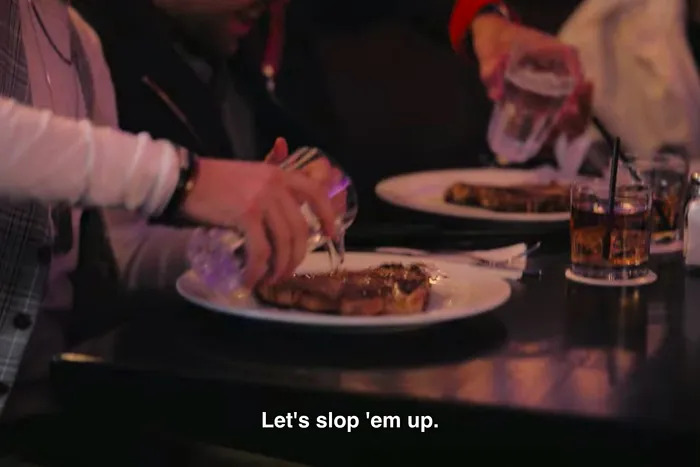

Sloppy Steaks

How to make Sloppy Steaks at Truffioni's
I used to be a real piece of shit. Slicked-back hair, white bathing suit, sloppy steaks, white couch. Big rare cut of meat with water dumped all over it, water splashing around the table.
Ingredients
- Slicked back hair
- A nice t-bone steak from Truffioni's
- A glass of water
Directions
- Wait until the waiter has turned around
- Grab glass of water and slop 'em up
- Don't let the waiter snatch 'em up
- Eat as fast as you can
Back to more recipes